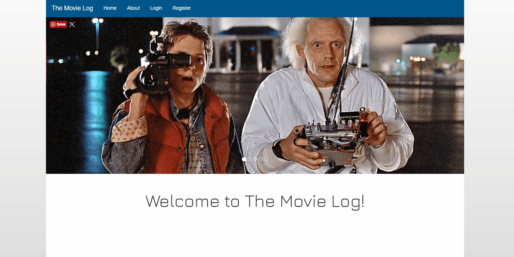
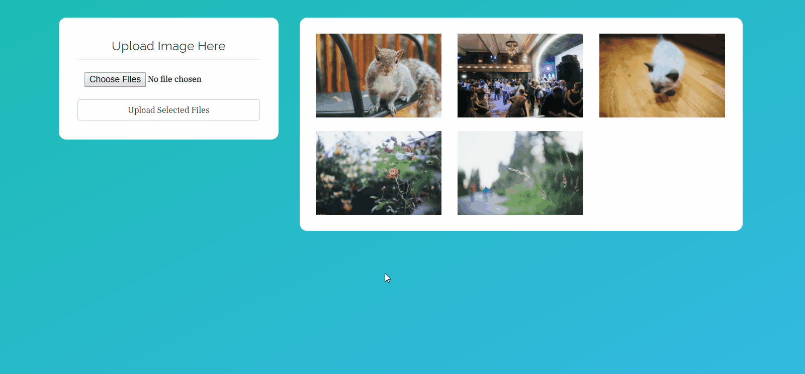
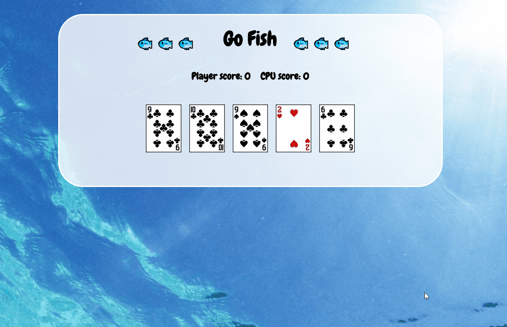

Sereina Blanchard
I'm Sereina, a software developer based in Bellevue, WA.
After several years selling electronics in the world of retail I jumped into software development and haven’t looked back. My biggest passions are problem solving and being creative, two things that fit perfectly into the world of code. With technologies growing at a rapid rate, there’s always something new and exciting to explore, which I love as it makes everyday a new adventure.
In 2017 I completed a 14 week coding bootcamp at Coding Dojo recieving a double black belt. It was there I spent 12+ hours a day learning new technologies, studying algorithms, working on projects with classmates, and soaking in every moment. Without a doubt it was the most challenging thing I've ever done, but it's been so worth it. Waking up in the morning knowing that I'm able to do something I enjoy is one of the best feelings in the world.
Once it's time to step away from my computer for the day there's a few things I might be found doing. Odds are I'll either be dancing lindy hop, or thinking about it. Just social dancing or attending a weekend event complete with classes, competition, and more dancing. It's something that I enjoy immensely! In the rare occasion that I'm not dancing I'm often found watching Star Trek (DS9 and TNG are my favorites), baking something gluten-free, likely with chocolate involved, or spending time with my family.
Portfolio
The Movie Log
The place to keep track of your favorite films and movies you want to watch. It untilizes The Movie Database API to allow users to search for movies and add them to lists, along with the ability to view other users profiles and lits.
C# - ASP.NET Core - MySQL - jQuery - HTML - CSS - API
View GitHub repositoryWorf

First Vue.js project with the purpose of familarizing myself with the framework and webpack. The app contains a CSS timeline, some simple hover over effects (one making the Enterprise fly and another making tricorder sounds), and a image gallery package.
JavaScript - Vue.js - HTML - CSS
View GitHub repositoryImage Upload Tutorial
After struggling myself for several days learning how to upload files in ASP.NET Core I created a tutorial to help walk others through the process and hopefully simplify it for them. It includes code snippets on the README page and has a working demo to show the end result.
C# - ASP.NET Core - HTML - CSS
View GitHub repositoryGif-land

Search and favorite your favorite gifs! The search pulls up the top 12 gifs for your query and dynamically displays them as stills and on hover they begin to animate. Gifs can also be added to favorites.
JavaScript - Node.js - jQuery - HTML - CSS - Giphy API
View GitHub repositoryPong
Play against the computer in Pong, complete with original sound effects! Game is created with the Pygame library and has traditional scoring when a player misses the ball and an easy level computer player.
Python - Pygame
View GitHub repositoryGo Fish
The game creates a deck of cards, a player, and CPU player objects on page load. jQuery was used to display visuals and allow the player to interact with the game. The game ends when one of the players runs out of cards.
JavaScript - jQuery - HTML - CSS
View GitHub repository

Design and Code © Sereina Blanchard 2017